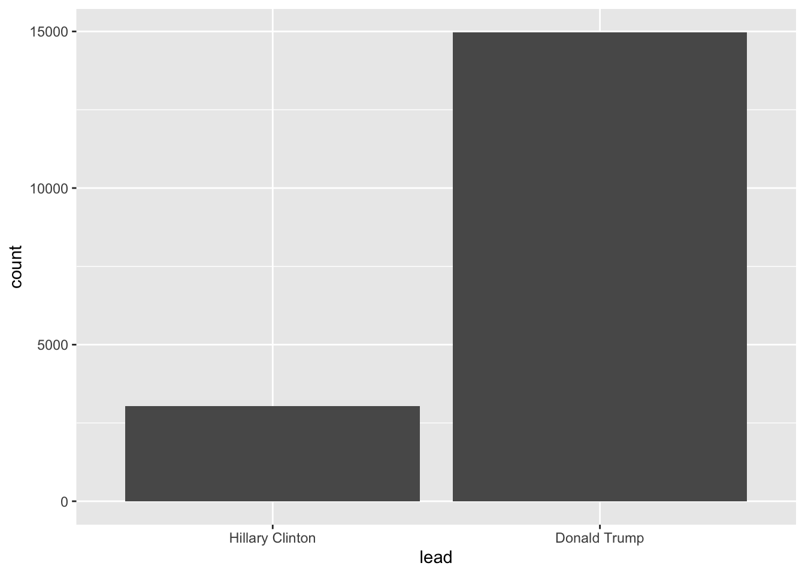

Factors are used in R to represent categorical data. In the following, I will briefly introduce you to the forcats package (nice anagram, Hadley!). Factors are augmented vectors which build upon integers. If you want to learn more about them, consider reading this paper.
[1] Greens AfD Leftists CSU SPD SPD CSU FDP
[9] AfD Leftists CDU AfD FDP AfD FDP CSU
[17] AfD SPD SPD FDP FDP CDU FDP AfD
[25] CSU FDP AfD CSU AfD CSU FDP AfD
[33] AfD AfD AfD AfD CSU CDU Leftists CDU
[41] FDP AfD CSU Leftists FDP SPD AfD FDP
[49] FDP <NA>
Levels: AfD CDU CSU FDP Greens Leftists SPD
Rows: 18475 Columns: 9
── Column specification ────────────────────────────────────────────────────────
Delimiter: ","
chr (5): county, fips, cand, st, lead
dbl (4): pct_report, votes, total_votes, pct
ℹ Use `spec()` to retrieve the full column specification for this data.
ℹ Specify the column types or set `show_col_types = FALSE` to quiet this message.
Sometimes you want to reorder factors – for instance, when you want to create plots. (Note: you will learn more on plots in the next session on data visualization)
Two orders would make sense: alphabetical and according to their number of votes. fct_reorder() takes another variable and orders the factor according to it.
If you want to do bar plots, which you can use to depict the frequency of a value, you can order them according to the frequency they appear in using fct_infreq():
election_data_w_fct |>mutate(lead = lead |>fct_infreq() |>fct_rev()) |>ggplot(aes(x = lead)) +geom_bar()

4.2.2 Modifying levels
Remember the first factor? You need to put some graphs together and decide that you would rather like to use the original German names for the parties. Go for fct_recode().
parties_fct_ger <-fct_recode(parties_fct,"Buendnis90/Die Gruenen"="Greens", "Die Linke"="Leftists")
Damn, now the levels are not in alphabetical order anymore.
Now you need to write something for someone who is not particular familiar with the political landscape in Germany and rather wants “left,” “center,” and “right” instead of the party’s names. Give fct_collapse() a shot – and feel free to change it if you disagree with my classification.
Another thing you could do – and this is handy for the election data set – is collapsing things together according to their frequency of appearance. In the case of the election data set, this might be handy to lump together the candidates into three groups: Donald Trump, Hillary Clinton, and other.
election_data_w_fct |>mutate(candidate =fct_lump(candidate, n =2))
# A tibble: 18,007 × 8
county candidate state pct_r…¹ votes total…² pct lead
<fct> <fct> <fct> <dbl> <dbl> <dbl> <dbl> <fct>
1 Los Angeles County Hillary Clinton CA 1 1.65e6 2314275 0.715 Hill…
2 Los Angeles County Donald Trump CA 1 5.43e5 2314275 0.234 Hill…
3 Los Angeles County Gary Johnson CA 1 5.69e4 2314275 0.0246 Hill…
4 Los Angeles County Other CA 1 4.67e4 2314275 0.0202 Hill…
5 Los Angeles County Other CA 1 1.35e4 2314275 0.00582 Hill…
6 Cook County Hillary Clinton IL 0.975 1.53e6 2055215 0.744 Hill…
7 Cook County Donald Trump IL 0.975 4.40e5 2055215 0.214 Hill…
8 Cook County Gary Johnson IL 0.975 5.59e4 2055215 0.0272 Hill…
9 Cook County Other IL 0.975 3.05e4 2055215 0.0149 Hill…
10 Harris County Hillary Clinton TX 1 7.06e5 1302887 0.542 Hill…
# … with 17,997 more rows, and abbreviated variable names ¹pct_report,
# ²total_votes
The problem here is that Gary Johnson appears as often as the two other candidates (have you ever heard of him?). Hence, fct_lump() cannot decide which levels to lump together. However, it has saved me a couple lines of code:
election_data_w_fct |>mutate(candidate =fct_lump(candidate, n =2) |>fct_recode("Other"="Gary Johnson"))
# A tibble: 18,007 × 8
county candidate state pct_r…¹ votes total…² pct lead
<fct> <fct> <fct> <dbl> <dbl> <dbl> <dbl> <fct>
1 Los Angeles County Hillary Clinton CA 1 1.65e6 2314275 0.715 Hill…
2 Los Angeles County Donald Trump CA 1 5.43e5 2314275 0.234 Hill…
3 Los Angeles County Other CA 1 5.69e4 2314275 0.0246 Hill…
4 Los Angeles County Other CA 1 4.67e4 2314275 0.0202 Hill…
5 Los Angeles County Other CA 1 1.35e4 2314275 0.00582 Hill…
6 Cook County Hillary Clinton IL 0.975 1.53e6 2055215 0.744 Hill…
7 Cook County Donald Trump IL 0.975 4.40e5 2055215 0.214 Hill…
8 Cook County Other IL 0.975 5.59e4 2055215 0.0272 Hill…
9 Cook County Other IL 0.975 3.05e4 2055215 0.0149 Hill…
10 Harris County Hillary Clinton TX 1 7.06e5 1302887 0.542 Hill…
# … with 17,997 more rows, and abbreviated variable names ¹pct_report,
# ²total_votes
In the script about data import you have learned about how to parse dates: for parse_date(), dates have to be formatted in a certain standard or you need to provide it with one. This is often tedious. That’s where the lubridate package jumps in: it provides you with parsing functions that are more handy. They all take a character vector and the function’s name is related to the order of the date’s components. The functions recognize non-digit separators and are, therefore, most of the time a hassle-free way to parse dates.
library(lubridate)
Attaching package: 'lubridate'
The following objects are masked from 'package:base':
date, intersect, setdiff, union
ymd("2000-02-29")
[1] "2000-02-29"
ymd("2000 02 29")
[1] "2000-02-29"
dmy("29.02.2000")
[1] "2000-02-29"
There is also a function for quarters:
yq("2000: Q3")
[1] "2000-07-01"
4.5 Date-times
They also have date-time equivalents:
ymd_hms("2000-02-29 14:00:00")
[1] "2000-02-29 14:00:00 UTC"
mdy_hm("02-29-2000 10.04")
[1] "2000-02-29 10:04:00 UTC"
dmy_h("29.02.2000 10")
[1] "2000-02-29 10:00:00 UTC"
4.6 Further handy things
today()
[1] "2022-11-21"
now()
[1] "2022-11-21 16:09:41 CET"
4.7 Manipulating dates
4.7.1 Components
You can also extract singular components from dates using the following functions:
Dealing with time zones is tedious. By default, R sets the time zone of every date you provide it with to UTC (Coordinated Universal Time). However, sometimes you need to change it – e.g., when you deal with flight data. lubridate provides you with some handy functions for doing so. Generally speaking, you will not often work with them.
First, you need to know which arguments you can provide the functions with – or, put differently, the names of the time zones.
head(OlsonNames()) # wrapped it with head() because it's 593 in total
If you want to set a new time zone to a date-object – hence, 2 o’clock UTC becomes 2 o’clock CET – use force_tz():
force_tz(example_datetime, tzone ="CET")
[1] "2000-02-29 14:00:00 CET"
If you want to transform your date-time object to a new time zone, preserving its time – for example, for appointments all around the world – use with_tz(). If you use the aforementioned now() function, lubridate will use your computer’s time zone:
with_tz(now(), tzone ="US/Eastern")
[1] "2022-11-21 10:09:41 EST"
4.9 Periods, durations, intervals
You will also want to do some calculations based on the dates and times you have parsed.
4.9.1 Periods
A period can be created using a pluralized name of a time unit.
months(3) +days(5)
[1] "3m 5d 0H 0M 0S"
Another way of doing so – which is suited for automation – is period():
period(num =5, unit ="years")
[1] "5y 0m 0d 0H 0M 0S"
You can also set multiple arguments:
period(num =1:5, units =c("years", "months", "days", "hours", "minutes"))
[1] "1y 2m 3d 4H 5M 0S"
4.9.2 Durations
Durations can be used to model physical processes. They are stored in seconds and can be created by prefixing the name of a period:
dweeks(x =1)
[1] "604800s (~1 weeks)"
Again, there’s a constructor function:
duration(num =1:5, units =c("years", "months", "days", "hours", "minutes"))